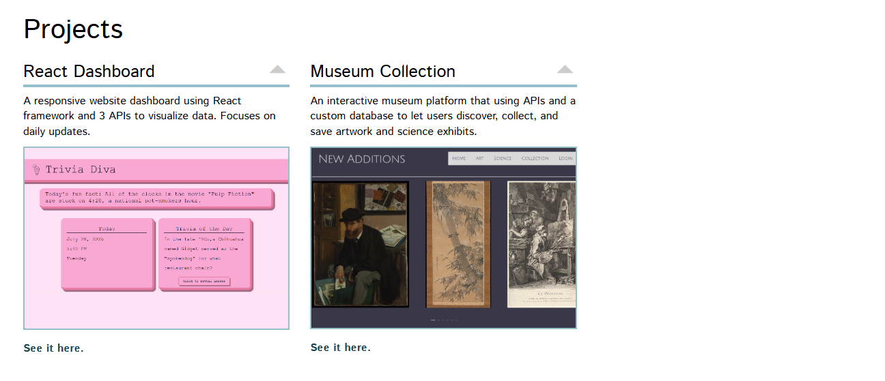
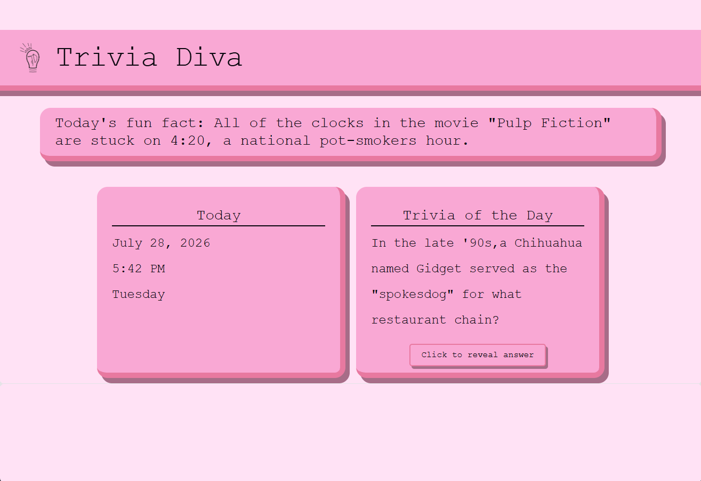
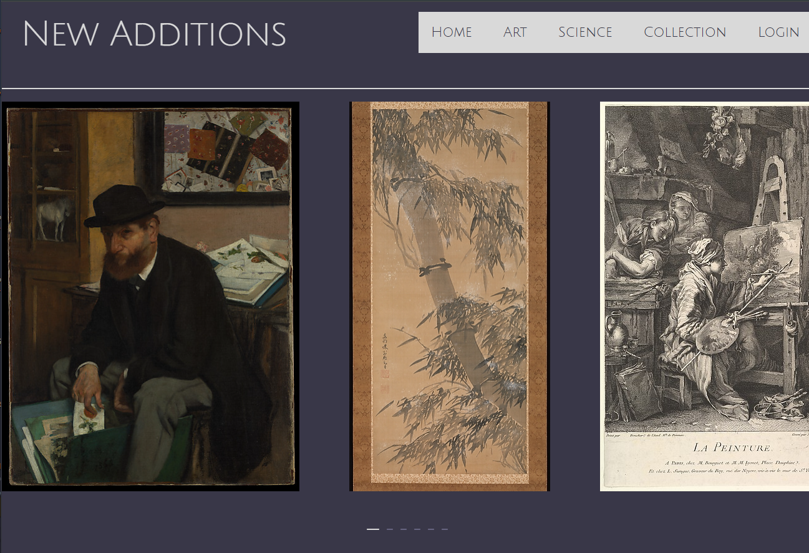
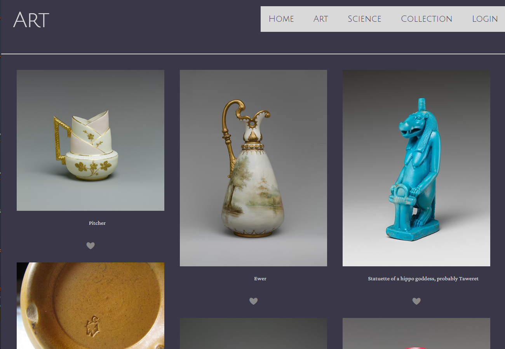
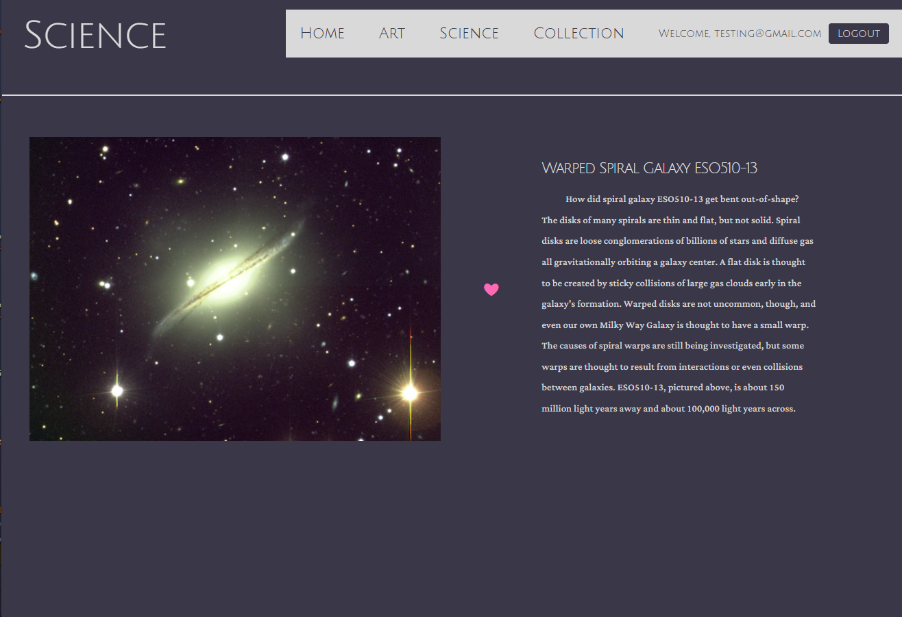
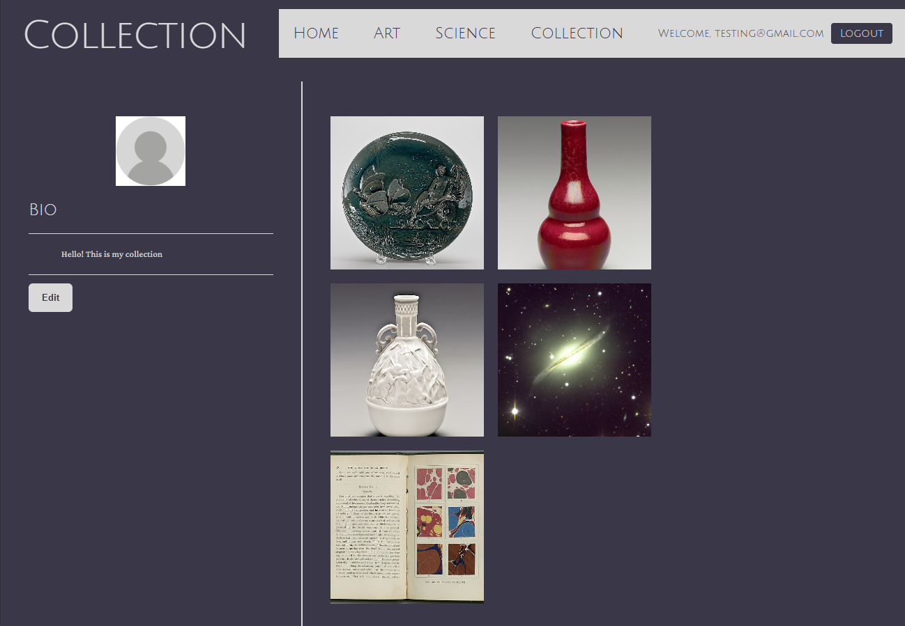
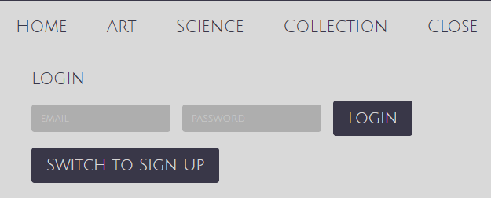

Divas & Divs
Overview
A semester-long team project completed for MI 449: Advanced Web Development and Databases. Our team designed and developed three web applications using React, JavaScript, external APIs, and database technologies, with a focus on responsive interfaces and full-stack functionality.
My Role
I worked as one of two developers on our four-person team. My responsibilities included implementing front-end features in React, integrating APIs, debugging functionality, and collaborating on database-backed application features throughout the semester.
Goals
The goal of this course was to gain experience developing modern web applications as part of a software development team. Across three projects, we practiced iterative development, API integration, database design, debugging, and collaborative workflows while building applications with increasing complexity.
Project 1: Team Website
Overview
Our team website was the first project we completed. It served as a hub for our team and our work, and it was designed to be visually appealing and easy to navigate. The website included information about our team members, roles, and projects. It also served as practice for working in a collaborative development environment.
Link:
Team Website Screenshots
Images of our team website:
Home Page

Expanded Project Section
Project 2: Trivia Diva
Overview
Trivia Diva was our second project, a trivia game built with React and JavaScript that utilized three external APIs to provide a live date and time, fact of the day, and trivia question of the day. These APIs were integrated using asynchronous JavaScript functions to retrieve and display dynamic data, creating an engaging user experience that changes every day.
My Contributions:
- Developed interactive React components using JavaScript, including state management with
useStateand data fetching withuseEffect. - Implemented the trivia question of the day feature using the Trivia API, allowing users to receive a new question and reveal the answer through interactive functionality.
- Integrated the World Time API using asynchronous JavaScript and API requests to display the current date, time, and day of the week.
- Utilized the Useless Facts API to dynamically display a new fact each day.
- Processed API responses and formatted returned data into user-friendly displays.
- Collaborated with the team to ensure seamless integration of all features and maintain a cohesive user experience.
Trivia Diva Screenshot
Image of our Trivia Diva application:

Trivia Game Page
Project 3: Museum Diva
Overview
Museum Diva was a full-stack interactive web application built with React and JavaScript that allows users to explore artwork and science content, save favorites, and create their own personalized digital museum collection. The application integrates multiple external APIs, user authentication, and a custom Supabase database to create a dynamic and personalized experience.
Concept
Users can browse artwork from The Metropolitan Museum of Art alongside science content from NASA's public APIs. After creating an account, users can save their favorite items, manage their personal collection, and customize their profile with a biography. Content is dynamically loaded through API requests, with features such as a rotating homepage carousel and interactive collection system encouraging users to explore new exhibits.
Original Pitch
Our website will be an interactive museum. When the user opens the site, there will be a selection between art or science museums, as well as a login option. There will be a carousel of ‘featured’ pieces on the homepage to add visual interest. When a user selects the art or science options, they will be taken to the page of that respective category to browse the collections. When a user logs in, it will allow them to ‘favorite’ pieces or exhibits that they especially enjoy. These can be viewed on the user’s “Personal Collections” page.
For this project, we will be utilizing React rather than Rails due to heightened familiarity. The content itself will be provided through the use of two APIs, one for our art page and another for science. We chose the MET’s API as well as the Science Museum Group’s API, as they are public and have a lot of content. Through these APIs, we will request images and display them. Continuing, we will create a relational database to store our user data. This will contain their login information, as well as the pieces or exhibits they ‘favorite.’
Museum Diva Screenshots
Images of our Museum Diva application:

Museum Diva Homepage

Museum Diva Art Page

Museum Diva Science Page

Museum Diva Collection Page

Museum Diva Login Section
Features & Highlights
- React application built with JavaScript
- Multiple API integrations (The Metropolitan Museum of Art & NASA APIs)
- Asynchronous JavaScript data fetching and API response handling
- User authentication and account management
- Custom Supabase database for storing user data and favorites
- Personalized user collections and profile customization
- Interactive favorites system with dynamic updates
- Automatic artwork carousel with dynamic content loading
My Contributions:
- Developed React components using JavaScript, including state management with
useStateand lifecycle handling withuseEffect. - Researched, integrated, and managed API requests for The Metropolitan Museum of Art and NASA content, including processing and displaying returned data.
- Created service functions to retrieve, filter, and organize artwork data from museum APIs.
- Designed and implemented the Supabase database structure to store user profiles and saved collections.
- Developed user authentication features including account creation, login, and logout functionality.
- Implemented the favorites system, allowing users to save, remove, and manage artwork in their personal collections.
- Built profile customization features, including editable user biographies connected to database storage.
- Collaborated with the team on interface design, debugging, testing, and improving overall usability.
Conclusion
This project significantly strengthened my experience working on a collaborative software development team. Throughout the semester I gained experience integrating APIs, working with databases, debugging complex applications, and developing features through an iterative team workflow. It also reinforced the importance of communication, version control, and writing maintainable code while building larger applications.